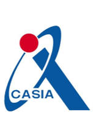

Xiao-hui Zhang 张晓辉
Interning @Institute of Automation, Chinese Academy of Science, Beijing, China
Master Student @ CS/Beijing Jiaotong University, Beijing, China
Bachelor @ ECE/Beijing Jiaotong University, Beijing, China
Email / Google scholar
About Me
I am a final year master student at Beijing Jiaotong University (BJTU). I interning at Institute of Automation, Chinese Academy of Science(CASIA) where I am advised by Jianhua Tao. My research interests mainly lie in the intersection of machine learning and multi-modal learning, with particular interests in continual learning and signal processing tasks such as Deepfake audio detection and multimodal emotion recognition.
My research lies at the intersection of continual learning and multi-modal learning. Specifically, I am interested in developing continuous multimodal tools that allow us to model, reconstruct, and understand the dynamic world from sparse, noisy, and unconstrained sensory data.
Prospective Advisers: I am now looking for full-time Ph.D. positions in the fields of machine learning and multimodal learning. If you have any opportunities or recommendations in these areas, I would greatly appreciate your assistance. Please drop me an email directly :).
|  | ||||||
|
Recent News
|
||||||
|
Research Projects(show selected / show by date) | ||||||